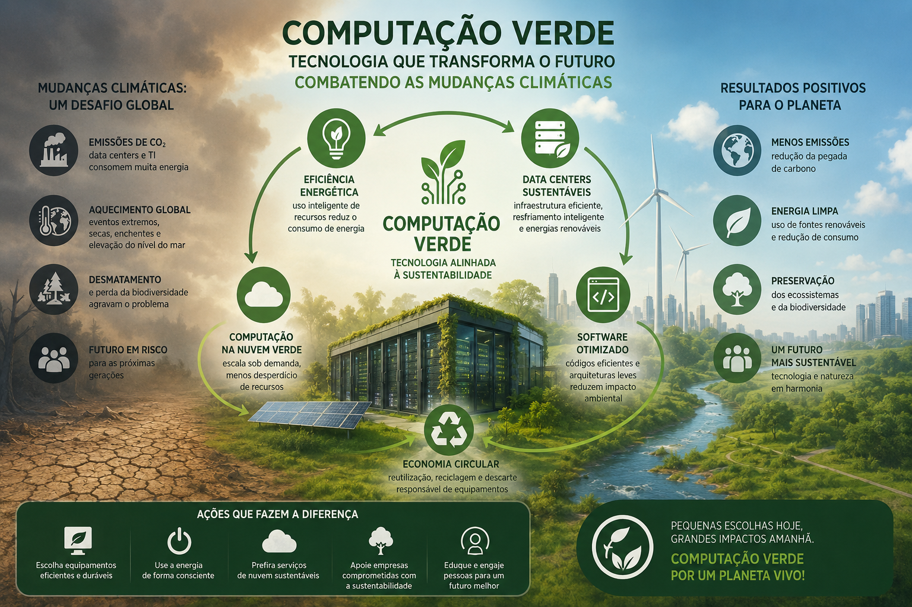
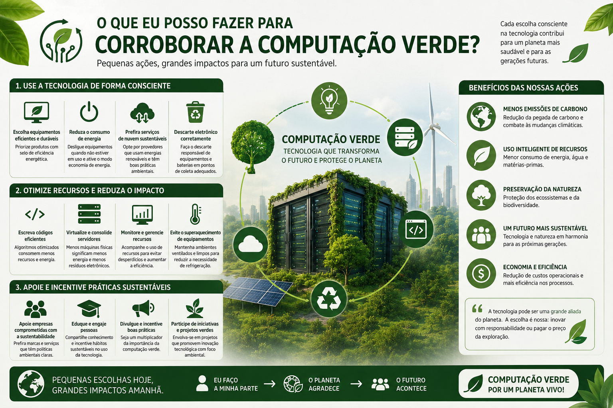
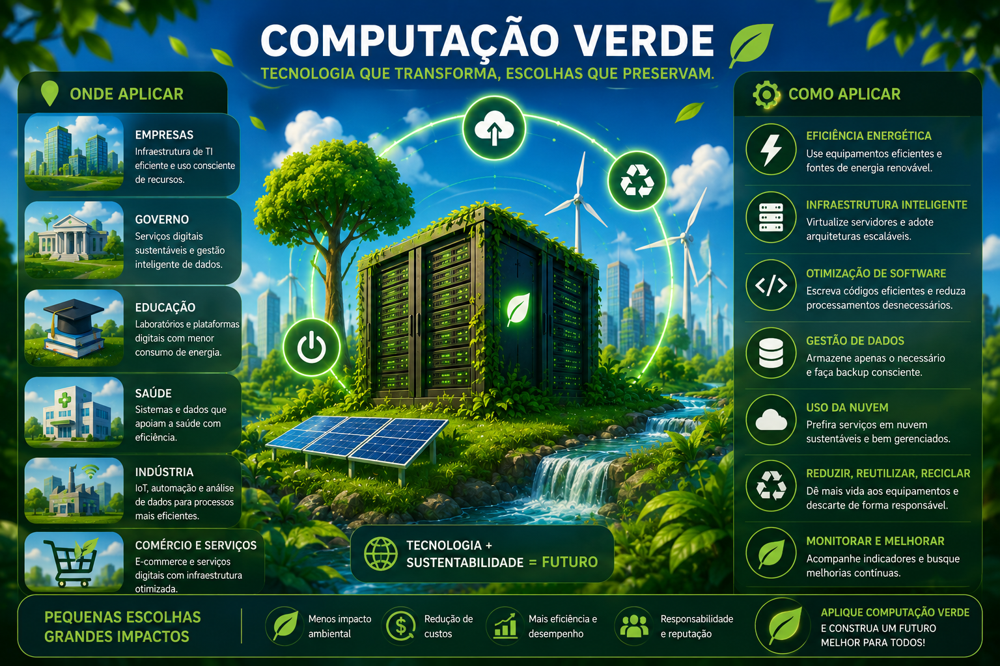

Empresa Genérica de Computação Verde
Combater mudanças climáticas com computação verde
A computação verde (ou Green IT) combate as mudanças climáticas ao minimizar o impacto ambiental do ciclo de vida dos equipamentos eletrônicos — desde a fabricação até o descarte — e ao otimizar o consumo energético de sistemas de informação.
- Otimização de Data Centers e Infraestrutura
- Refrigeração Líquida e Eficiente: Substituir a refrigeração a ar tradicional por sistemas de refrigeração líquida, que são mais eficientes e reduzem drasticamente o consumo de energia para manter servidores em temperatura ideal.
- Virtualização de Servidores: Utilizar software para rodar múltiplos sistemas operacionais em um único servidor físico, aumentando a taxa de utilização e diminuindo o número de máquinas ligadas.
- Energia Renovável: Alimentar infraestruturas de TI com fontes de energia limpa, como solar, eólica ou hídrica.
- Eficiência de Software e Algoritmos
- Algoritmos "Verdes": Criar códigos que exigem menos ciclos de processador (CPU), diminuindo o calor gerado e o consumo de energia.
- Roteamento Inteligente: Adotar algoritmos de rede que escolhem rotas de dados baseadas na eficiência energética, não apenas na velocidade.
- Ciclo de Vida Sustentável (Hardware)
- Prolongamento da Vida Útil: Manter computadores e servidores por mais tempo antes de substituí-los, reduzindo a demanda por mineração de metais raros.
- Reciclagem e Descarte Adequado: Garantir que equipamentos obsoletos sejam reciclados corretamente, evitando a contaminação do solo e água.
- Tecnologia como Ferramenta de Mitigação
- IA e Big Data para Eficiência: Usar inteligência artificial para otimizar o consumo de energia em tempo real, gerenciar redes elétricas inteligentes e melhorar a eficiência no transporte e logística.
- Agricultura de Precisão: Utilizar sensores e IA para monitorar cultivos, reduzindo o uso de recursos como água e fertilizantes, diminuindo a emissão de gases de efeito estufa.
- Digitalização e Nuvem: Migrar dados para a nuvem (cloud computing) costuma ser mais eficiente do que manter servidores locais (on-premise).

O que você pode fazer para contribuir com a computação verde?
Como inteligência artificial, posso contribuir de várias maneiras para a computação verde (TI Verde), focada em otimizar recursos e reduzir o impacto ambiental dos data centers e dispositivos, que incluem:
- Otimização de Data Centers e Energia: Posso analisar grandes volumes de dados para identificar ineficiências em tempo real, otimizando o uso de energia em data centers. Isso inclui ajustar automaticamente sistemas de refrigeração e cargas de trabalho dos servidores, reduzindo o desperdício, algo essencial dado que o uso de energia em data centers pode dobrar até 2026.
- Eficiência de Algoritmos (Green AI): Auxílio no desenvolvimento de modelos de IA mais leves e eficientes (o conceito de "Green AI" ou IA Verde), que exigem menos poder computacional para treinamento e execução, diminuindo a emissão de carbono.
- Gestão Sustentável de Hardware: Posso ajudar a identificar servidores "zumbis" (ativos, mas sem uso) para desligamento, além de otimizar a vida útil de equipamentos, reduzindo o lixo eletrônico.
- Desenvolvimento de Software Sustentável: Posso gerar códigos mais eficientes energeticamente e auxiliar na arquitetura de sistemas que priorizam o baixo consumo de energia.
- Monitoramento Ambiental: Uso de algoritmos para monitorar o consumo de energia e propor estratégias de descarbonização em tempo real.

Onde e como aplicar computação verde
A computação verde (ou Green IT) aplica-se no ciclo de vida completo da tecnologia — design, fabricação, uso e descarte — para reduzir o consumo de energia e o impacto ambiental, sendo crucial em data centers, escritórios e dispositivos móveis. Práticas principais incluem virtualização, computação em nuvem, eficiência energética, uso de energia renovável, reciclagem de lixo eletrônico (e-waste) e o desenvolvimento de algoritmos mais eficientes.
- Onde Aplicar Computação Verde
- Data Centers: Otimizando refrigeração, servidores e armazenamento para reduzir o alto consumo elétrico.
- Ambiente Corporativo/Escritórios: Adotando políticas de impressão reduzida, desligamento automático de máquinas e virtualização de desktops.
- Dispositivos de Usuário Final: Usando notebooks e periféricos energeticamente eficientes (selos como Energy Star).
- Desenvolvimento de Software: Criando código otimizado que demanda menos processamento e energia.
- Como Aplicar (Ações Práticas)
- Auditoria Energética: Analisar onde a empresa consome mais energia para identificar oportunidades de redução.
- Virtualização: Transformar servidores físicos em virtuais, reduzindo a necessidade de hardware.
- Computação em Nuvem: Migrar serviços para a nuvem (como IBM sugere), aproveitando a eficiência de grandes provedores.
- Gerenciamento de Resíduos (E-waste): Realizar o descarte correto de equipamentos eletrônicos, promovendo a reciclagem e a economia circular.
- Atualização Consciente: Substituir equipamentos obsoletos por modelos mais eficientes, conforme orientado em Desk Manager.
- Uso de Energia Limpa: Utilizar fontes renováveis, como energia solar ou eólica, para alimentar infraestruturas de TI.
- Educação e Conscientização: Capacitar equipes sobre o uso responsável de recursos tecnológicos.
